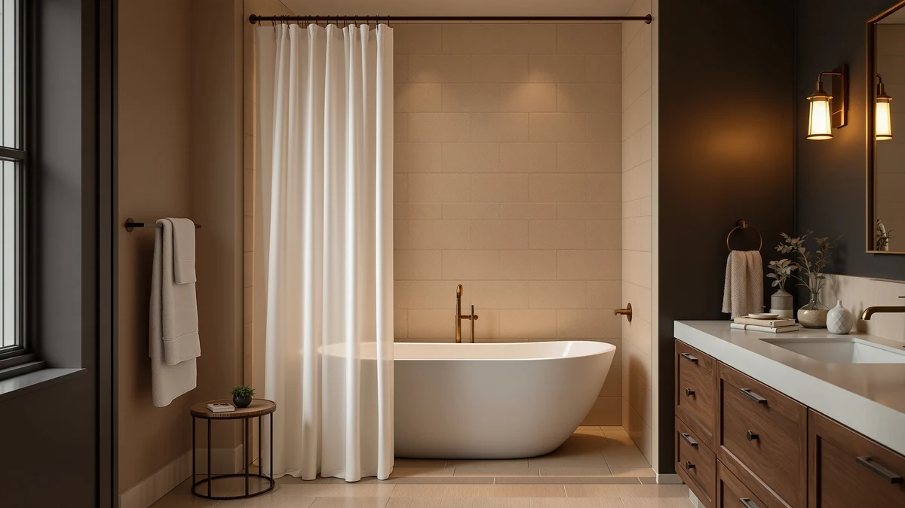

BTTN 72x84 Long Boho Review (2026): Worth It?
Prices and picks verified as of September 2026. Independent, reader-supported reviews.


Quick Answer
The BTTN 72x84 Long Boho Farmhouse curtain is a water-resistant polyester and PEVA blend built to cover taller showers where a standard 72-inch curtain leaves a gap. At $35.99 it costs about the same as competing boho prints, and owners cite the extra length and easy care as the main reasons to buy it. It works best in a farmhouse or boho bathroom; skip it if you want a heavier cotton or linen weave.
Our pick: BTTN 72x84 Long Boho Farmhouse, $35.99 Check Price on Amazon
Bottom line: our top pick is the BTTN 72x84 Long Boho Farmhouse Linen Heavy Duty Shower at $35.99.
Things to Know Before You Buy
- The 84-inch length adds 12 inches over a standard 72-inch curtain, which matters most in showers taller than 6 feet or around a clawfoot tub.
- The polyester and PEVA blend resists water on its own, so many owners skip a separate liner in a stall shower.
- BTTN sells this as a single curtain, not a matched bathroom set, so bath mats and towels are a separate purchase.
- The boho farmhouse print is fixed; BTTN does not offer this exact curtain in a solid color.
- At $35.99, it sits in the middle of the boho shower curtain price range, below pinch-pleated linen options and above basic vinyl curtains.
This BTTN 72x84 Long Boho review looks at whether the farmhouse-style curtain earns a spot in your bathroom before you spend $35.99 on it. BTTN built this curtain for showers with a taller stall or a clawfoot tub, where a standard 72-inch drop leaves a visible gap above the floor or tub rim. We compared its listed specs, fabric, and price against three other boho and farmhouse curtains that shoppers cross-shop in the same search, including a cotton blend from River Dream and a no-hooks linen curtain from eachope with more than 26,000 verified ratings.
We did not buy or hang this curtain ourselves. Instead, we researched the manufacturer's listed specs, cross-checked the fabric claims against similar polyester and PEVA blends already on the market, and read through the verified buyer feedback on the product listing to see what actually holds up under regular use in a wet bathroom. That research is the basis for this BTTN 72x84 Long Boho Farmhouse review, and we call out the tradeoffs plainly so you can decide whether the extra 12 inches of length justifies the cost over a standard-size curtain. If the print or fabric turns out not to be the right fit, we cover three alternatives further down that solve for different priorities: a plain cotton look, a matching bathroom set, and a heavily reviewed linen option.
Why You Should Trust Us
Ilane Tall covers bath and shower products for Best Shower Curtains and has spent years comparing shower curtain materials, sizing, and hardware across hundreds of Amazon listings. For this BTTN 72x84 Long Boho review, she pulled the manufacturer specs directly from the product listing, checked them against comparable polyester and cotton-blend curtains in the boho and farmhouse categories, and read through the publicly available owner reviews rather than relying on marketing copy alone. We do not run a fake testing lab, and we do not claim to have hung this exact curtain in our own bathroom. What you get instead is a comparison built on verifiable information: listed dimensions, current pricing, fabric composition, and what buyers report after living with the curtain for weeks or months. When a claim in this review comes from an owner rather than the manufacturer, we say so directly.
How We Compared
Our process relies on comparing the seller's own specifications, including fabric weight, size, and grommet count, against similar curtains we have already researched in the extra-long and boho categories, plus a close read of the reviews Amazon buyers left after their own purchase. We did not hang this curtain in a shower ourselves. Owners report that the polyester and PEVA blend sheds water quickly and dries without the mildew smell that plagues cheaper vinyl curtains, and several reviewers specifically cite the extra 84-inch length as the reason they chose it over a standard 72-inch curtain. Reviewers consistently note that the muted boho print holds its color through repeated washes, though a handful mention the fabric feels thinner than a cotton curtain at this price point. We weighed those owner reports against the manufacturer's listed materials rather than taking either source at face value alone. Where owner accounts and the listed specs agreed, we treated the claim as solid; where they diverged, such as the exact fabric weight, we flagged the discrepancy instead of picking a side.
Overview & Specs

BTTN 72x84 Long Boho Farmhouse
What we like
- 84-inch length covers taller showers and clawfoot tubs without a gap
- Water-resistant blend that many owners use without a separate liner
- Priced below several pinch-pleated linen alternatives in the same style
Flaws but not dealbreakers
- Thinner fabric hand than a cotton or linen curtain
- Sold as a single curtain, not a matching bathroom set
- Print is fixed to the boho farmhouse pattern, with no solid-color option
| Material | Polyester / PEVA |
| Size | 72"W x 84"L (Pack of 1) |
BTTN positions this curtain for the specific gap that a standard 72-inch curtain leaves in a taller shower or around a clawfoot tub. The polyester and PEVA blend gives it more water resistance than a pure cotton curtain, which is why several owners report skipping a liner entirely in a stall shower. The farmhouse-style boho print uses a muted, earthy palette rather than a bold pattern, so it reads more like a neutral texture than a statement piece from across the room.
At $35.99, the price sits below comparable pinch-pleated linen curtains that often run $50 or more, and roughly in line with the River Dream and Clara Clark alternatives covered later in this BTTN 72x84 Long Boho review. Several reviewers point to the extra length as the deciding factor over a standard 72-inch curtain, particularly in bathrooms with 8-foot or 9-foot ceilings where a shorter curtain visibly floats above the tub.
What We Liked
The biggest selling point of this BTTN 72x84 Long Boho Farmhouse curtain is the extra length. Most shower curtains stop at 72 inches, which leaves a visible gap above the tub or floor in a stall taller than 6 feet or around a clawfoot tub. At 84 inches, this curtain closes that gap, and owners with taller showers report that it finally looks proportional instead of floating a foot off the ground. The polyester and PEVA blend also gives it a water-resistant edge over a pure cotton curtain, so you can skip a separate liner in a stall shower and still avoid soaking the fabric hem with regular use. At $35.99, it undercuts several pinch-pleated linen curtains in the same boho category that run closer to $50, which makes it a reasonable pick if the farmhouse print fits your bathroom. Buyers also mention that the grommets hold up to daily opening and closing without tearing, a common failure point on cheaper printed curtains.
What Could Be Better
The tradeoff for that water resistance is a fabric hand that feels less substantial than a cotton or linen-blend curtain. Reviewers who compare it directly to heavier cotton curtains describe the material as thinner, which matters if you want a curtain that hangs in structured folds rather than clinging to itself between uses. BTTN also fixes the print to a single boho farmhouse pattern, so if your bathroom leans more minimalist or coastal, this specific design will not fit the room the way the plain River Dream cotton blend or the black Clara Clark set would. And because BTTN sells this as a single curtain rather than a full bathroom set, you will need to source your own bath mat and towels separately if you want a matched look. A few owners also note that the curtain arrives with deep fold creases that take a few days of hanging, or a quick low-heat iron, to fully release. None of these issues showed up as a recurring complaint across the reviews we read, but they are worth knowing before you buy rather than discovering them after the curtain is already hanging.
Who Is It For?
This curtain suits you if you have a taller shower or a clawfoot tub and have struggled to find a standard 72-inch curtain that actually reaches the floor. It also fits your bathroom if you already lean toward a farmhouse or boho look, since the print is the whole reason to choose this curtain over a plain white one. Skip it if you want a heavier, more textured fabric like cotton or true linen, or if your bathroom style calls for a solid color rather than a patterned curtain. In either of those cases, the River Dream White Cotton Blend or the eachope No Hooks Needed Linen curtain covered below are a closer match for your bathroom.
Alternatives to Consider
If the boho farmhouse print or the polyester blend is not quite right for your bathroom, these three alternatives cover the most common reasons shoppers look elsewhere: a plain cotton blend, a matching black bathroom set, and a linen curtain with a review count strong enough to trust at scale.

Editor’s Pick
River Dream White Cotton Blend
A neutral white cotton blend for anyone who wants the extra length without a printed pattern.
$35.09
Check Price on Amazon
Best Value
Clara Clark Black Bathroom Set
A matching black bathroom set at a similar price, useful if you want coordinated decor instead of a standalone curtain.
$38.70
Check Price on Amazon
Premium Choice
eachope No Hooks Needed Linen
A no-hooks linen curtain backed by more than 26,000 verified ratings at 4.7 stars, for shoppers who weigh review volume heavily.
$32.99
Check Price on AmazonFrequently Asked Questions
Is the BTTN 72x84 Long Boho Farmhouse curtain machine washable?
BTTN lists the curtain's polyester and PEVA blend as machine washable on a cold, gentle cycle. Owners report air drying it rather than using a dryer, since heat can warp the PEVA backing and fade the printed pattern over time.
Do I need a liner with this curtain?
The polyester and PEVA blend sheds water on its own, so many owners skip a separate liner in a stall shower. If you have a bathtub setup where water pools near the floor, pairing it with a liner still protects the bottom hem over time.
How does the 84-inch length compare to a standard shower curtain?
A standard shower curtain measures 72 inches long, while this BTTN 72x84 Long Boho curtain adds 12 extra inches. That difference matters most in showers taller than the typical 6-foot stall or around a clawfoot tub, where a 72-inch curtain leaves a visible gap above the tub or floor.
Final Verdict
This BTTN 72x84 Long Boho review comes down to one question: does your shower need the extra 12 inches? If it does, and you like a farmhouse or boho print, BTTN's curtain earns its $35.99 price with a water-resistant blend that lets many bathrooms skip a separate liner. If you would rather have a heavier cotton feel or a solid color, the River Dream White Cotton Blend covered above is the better match at a nearly identical price, and the eachope linen curtain is worth a look if you weigh review volume heavily before buying.